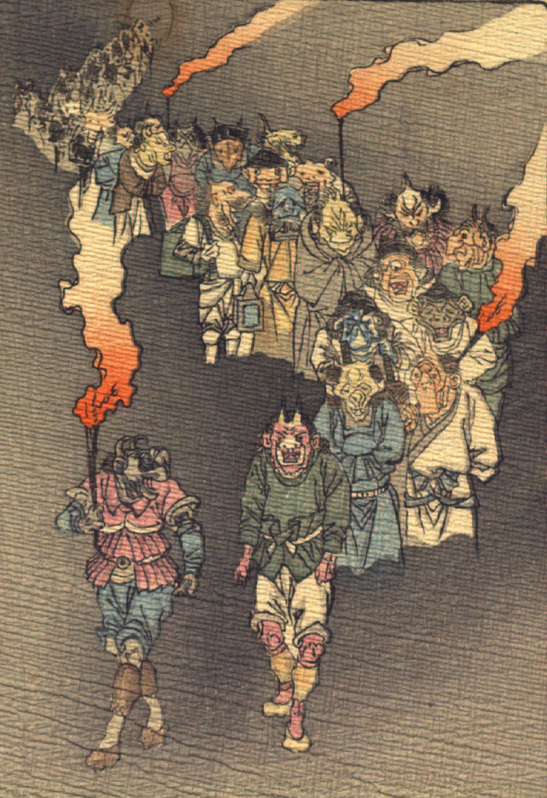

鬼の行列。何十体もの鬼が列をなして歩いている。中には、松明を持っている鬼もいる。
著作者：J.Dautremer／出典：親書誌：U426_nichibunken_0123：Le vieillard et les démons／日付：2006／資源識別子：U426_nichibunken_0123_0002_0000
Copyright (c)2010- International Research Center for Japanese Studies, Kyoto, Japan. All rights reserved.